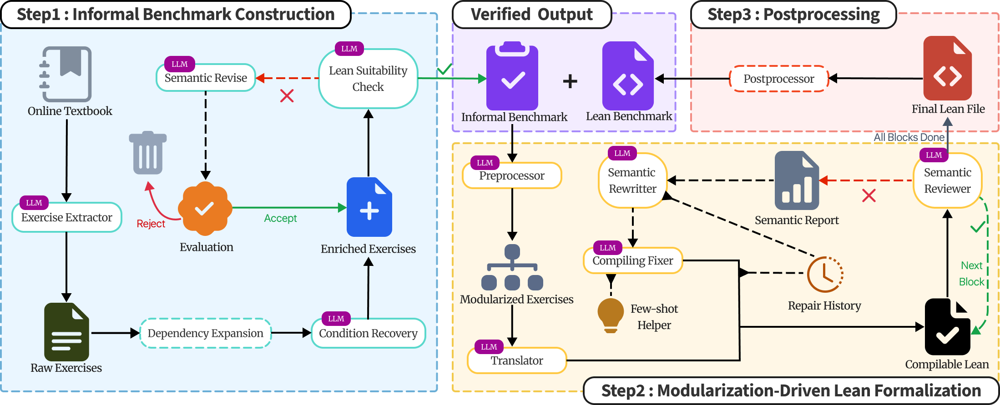
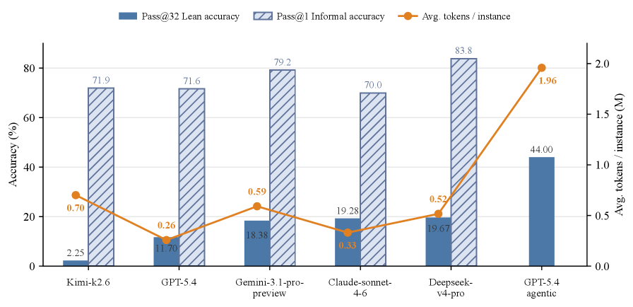

Introduces CAM-Bench, 1000 Lean 4 proof targets in computational and applied mathematics with a dependency-recovery pipeline.
Abstract
Formal theorem-proving benchmarks enable mechanically verifiable evaluation of mathematical reasoning in large language models. However, existing benchmarks mainly focus on Olympiad-style problems and algebraic domains, leaving computational and applied mathematics underrepresented. We introduce CAM-Bench, a Lean 4 theorem-proving benchmark of 1,000 Lean proof targets in computational and applied mathematics, with coverage spanning optimization, numerical linear algebra, and numerical analysis. These problems are adapted from textbook exercises and often depend on locally introduced definitions, notation, algorithms, and elementary results. To construct CAM-Bench, we develop a dependency-recovery pipeline that reconstructs the local textbook context needed to state each problem faithfully. It then normalizes each problem into a standalone informal theorem and translates it into a Lean target. We validate the resulting formal problems through Lean compilation and semantic review, checking both formal correctness and semantic alignment with the original exercises. For each problem, we release the raw exercise, recovered context, normalized informal theorem, and final Lean target. CAM-Bench complements existing formal mathematics benchmarks by targeting applied mathematics problems that rely on textbook concepts and elementary theorems, many of which are not directly available as standard Mathlib4 lemmas. We evaluate widely used large language models and formalization agents on CAM-Bench, and analyze common failure modes in tracking local assumptions, applying elementary results, decomposing proofs, and maintaining long-horizon control in Lean.
Problem
Formal theorem-proving benchmarks focus primarily on Olympiad-style problems and algebraic domains, leaving computational and applied mathematics underrepresented. Problems in optimization, numerical linear algebra, and numerical analysis depend on locally introduced definitions and textbook context that existing benchmarks do not capture.
Approach
The authors construct CAM-Bench, a Lean 4 benchmark of 1,000 proof targets derived from 778 textbook exercises, using a dependency-recovery pipeline that reconstructs local textbook context (definitions, notation, algorithms, elementary results) needed to state each problem. The pipeline normalizes exercises into standalone informal theorems, performs semantic review for assumption and task preservation, then translates them into Lean targets via modularization-driven formalization with compiler-guided repair.

Figure 1 : Pipeline Overview
Results
Among non-agentic pass@32 baselines, Deepseek-v4-pro achieves the highest verified Lean accuracy at 19.67%, closely followed by Claude-sonnet-4.6 at 19.28%. The agentic proof-search setting with GPT-5.4 reaches 44.00% verified accuracy, more than doubling the strongest non-agentic baseline. Common failure modes include library/API grounding (50-55% of failures), proof decomposition and long-horizon control (68-69%), and formal representation issues (39-46%).

Figure 5 : Model performance and token efficiency on CAM-Bench. Pass@32 Lean accuracy and Pass@1 informal accuracy are shown as percentages (%) on the left y-axis, while average token usage per evaluated benchmark instance is shown in millions of tokens (M) on the right y-axis. Lean accuracy is evaluated at the file level, requiring all sorry blocks to be completed and the full Lean file to verify